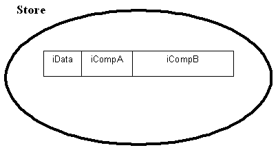
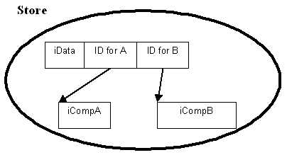

|
| |
The protocol for storing a compound object follows a standard pattern. However, the design of some compound objects may force deviations from this.
A compound object can be stored either in-line or out-of-line.
The basic protocol for storing is the StoreL() function.
This is true whether the object is stored in-line or out-of-line and should be
prototyped as:
TStreamId StoreL(CStreamStore& aStore) const;
The function takes a reference to the store in which the stream or stream network is to be stored and returns the stream ID through which the object can be restored later.
Storing a compound object’s component objects in-line means writing all of these components to the same stream.
In general, this is achieved by defining and implementing a
StoreL() member function for the compound object's class.
For example, for a class CCompound defined as:
CCompound class : public CBase
{
...
TInt iDdata;
CComponentA* iCompA;
CComponentB* iCompB;
...
}
where CComponentA and CComponentB are
classes, the object's component objects can be stored in the same stream as the
remainder of the component's data. The StoreL() implementation
is:
TStreamId CCompound::StoreL(CStreamStore& aStore)
{
RStoreWriteStream outstream;
TStreamId id = outstream.CreateLC(aStore); // Creates the write stream
ExternalizeL(outstream); // Externalises the object and all of its components
outstream.CommitL(); // Commits the stream
CleanupStack::PopAndDestroy(); // Performs cleanup on the write stream object
return id; // Returns the stream ID
}
ExternalizeL() externalises CCompound’s
data members and components; the implementation is:
void CCompound::ExternalizeL(RWriteStream& aStream) const
{
aStream << iData;
aStream << *iCompA;
aStream << *iCompB;
}
The stream can be visualised as:

|
Storing a compound object’s component objects out-of-line means writing all of its component objects to a different stream from that to which it, itself, is written. Each component may be written to its own stream or to its own network of streams. The main advantage of this is that it allows for deferred loading of streams.
It is important to note that components are stored before the containing object.
The following code fragment defines an example class, CCompound, having
two components, CComponentA and CComponentB. The
components are defined as instances of the templated class TSwizzle.
CCompound class : public CBase
{
...
TInt iDdata;
TSwizzle<CComponentA> iCompA;
TSwizzle<CComponentB> iCompB;
...
}
Storing is achieved by defining and implementing a StoreL()
member function for the compound object's class. In this example, the
StoreL() implementation is:
TStreamId CCompound::StoreL(CStreamStore& aStore)
{
CStoreMap* map=CStoreMap::NewLC(aStore);
StoreComponentsL(*map);
RStoreWriteStream stream(*map);
TStreamId id=stream.CreateLC(aStore);
ExternalizeL(stream);
stream.CommitL();
map->Reset();
CleanupStack::PopAndDestroy(2);
return id;
}
The StoreL() function:
writes the CCompound components to their own
streams.
writes CCompound itself and its components’
stream IDs to a single stream.
returns the ID of the top-level stream.
This can be visualised as:

CCompound’s components are stored to their own streams by
defining and implementing a StoreComponentsL() member function;
this is prototyped as:
void StoreComponentsL(CStreamStore& aStore,CStoreMap& aMap)
and implemented as:
void CCompound::StoreComponentsL(CStreamStore& aStore,CStoreMap& aMap)
{
TStreamId id;
if (iCompA)
{
id = iCompA->StoreL(aStore); // store component
aMap.BindL(iCompA,id); // connect the resulting stream id and component
}
if (iCompB)
{
id = iCompB->StoreL(aStore); // store component
aMap.BindL(iCompB,id); // connect the resulting stream id and component
}
}
The condition: if (iCompA) is equivalent to: if
(iCompA.IsPtr()), and returns true only if the Swizzle represents the
CComponentA object as a pointer. In an application where deferred
loading is important, this allows for the possibility that the
CComponentA object is not loaded when the attempt to store the
CCompound object is made.
Although each of CCompound's components are shown stored in
their own respective single streams, they may be stored into their own
respective network of streams and the resulting stream IDs may be the IDs of
head streams. A component can consist of further components.
StoreComponentsL() takes a reference to a store map, as well
as the store. The store map is constructed by StoreL() and is used
to contain the association between internal objects and stored components
(represented in the store by their stream IDs). These IDs are written by
CCompound's ExternalizeL() function and is
implemented:
void CCompound::ExternalizeL(RWriteStream& aStream) const
{
aStream << iDdata;
aStream << iCompA;
aStream << iCompB;
}
This simplicity is due to RStoreWriteStream behaviour. The
pointers are automatically looked up in the map associated with the stream, as
they are being externalised.
The store map must be reset before destroying it because the store map’s destructor deletes any streams from the store that are still referenced in the map. This means that, should a leave occur during the storing operation, any streams that have been written are automatically cleaned up.
It is legitimate to define the CCompound class without using
Swizzles. If the class is defined as:
CCompound class : public CBase
{
...
TInt iDdata;
CComponentA* iCompA;
CComponentB* iCompB;
...
}
then the implementations of CCompound::StoreL(),
CCompound::StoreComponentsL() remain the same, but
CCompound::ExternalizeL() has to change to:
void CCompound::ExternalizeL(RWriteStream& aStream) const
{
aStream << iDdata;
aStream << *iCompA;
aStream << *iCompB;
}
However, this makes it more difficult to implement deferred loading.
Copyright ©2002 Symbian Ltd. 6.1-00174 |
|